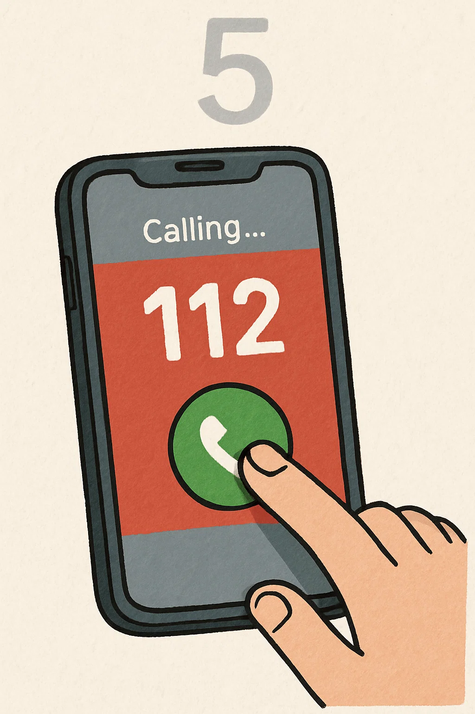

Nézze meg, hogy biztonságos –e a helyszín, ha igen, menjen oda a sérülthöz. Szólítsa meg hangosan, ha nem reagál, térdeljen le mellé, szólítsa meg újra, majd rázza meg a vállát.
Ha továbbra sem reagál, nézzen körül, ha lát maga körül embereket, szóljon nekik, hogy hívjanak mentőt, ha nincs Ön körül senki, akkor tárcsázza a 112-t, vagy indítsa el az ÉletMentő appot.
Emelje fel a sérült állát, tegye szabaddá a légutakat.
Hajoljon a sérült fölé és 10 másodpercig vizsgálja a légzését. 10 másodperc alatt 2 erős légvételt kell, hogy halljon.
A telefonban a diszpécser végig segíteni fog Önnek! Mondja el, hogy hívják, hol van most pontosan, hány sérült van, milyen sérülést tapasztal. A telefont a mentők kiérkezéséig NE TEGYE LE!

Kezdje meg az újraélesztést. Kulcsolja össze a kezeit, majd a szegycsont végétől 2 ujjnyira helyezze a tenyérgyököt a szegycsontra és nyomja le 5-6 cm mélyen. A lenyomásokat folyamatosan végezze, amíg a mentősök ki nem érnek. Ne feledje: ha nem csinálja tökéletesen, még akkor is többet tesz a betegért, mintha nem csinálna semmit.